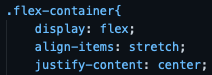

with the power of CSS, you can do a lot of crazy stuff on your webpage with the help of Flexboxes
as such, I'll be teaching you about 3 different flexbox item properties, and 3 flexbox container properties. let's start with item properties.
if you would, please take a glance at the boxes below:
at first glace, it seems like all I did was change the box names to be out of normal order.
however, let's get a closer look at the code...

the boxes are technically in the right order, but are being switched based on the values assigned to the order property.
so with the order property, we can rearange flexbox items on the fly without multiple copies, pastes, and deletes.
ever wanted one of your flexbox items to grow faster than the others?
(considering you're here, the answer is most likely no, but for the purpose of this segment just say yes)
WELL NOW YOU CAN!
observe the boxes below, and play around with window size a bit.
No matter what, it seems like 2 is growing at a faster rate, staying multiple sizes larger than the other boxes

using the flex-growth property, we can adjust the rate at which a flex item grows relative to other items.
a similar tag is flex-shrink, which determines the rate at which it shrinks relative to others!
to activate it, set it up similar to above, but replace "flex-grow" with "flex-shrink".
one last note is that both will take up the length of the screen by default
the Flex Basis property is defenitely one of the simpler properties
using it, you can set the initial length of any specific boxes to something that isn't the original
to accomplish this, simply give one of the divs the "flex-basis" property, then set it to whatever you want!

furthermore, unlike Flex-grow, the altered item will keep it's general length compared to the other boxes when the tab shrinks
so when you want to enlarge a box's width to a certain constant size, use flex-basis
this is probably the most important of the container properties!
without it, this whole web page is basically unneeded...
to start, set up a div class similar to this:
afterwords, apply it to a div, and you've got the parent container!
from there, you can add some sub-divs, and set them up in just about any way you please.
there really isn't a set guideline for those, as compaired to the main container.
it should also be noted that the container will not physically appear on the page until you add sub divs...
you've actually seen this property at play above with the 1st and 3rd item properties!
relatively straightforward, you simply add the "justify-content" property to the parent container section of the css!
this property is especially useful if you find yourself with large amounts of flex-items within a singular container
to start, head into the CSS and give the parent container the flex-wrap property
now, try playing around with the browser size while looking at the flex container and boxes below:
when shrinking the webpage, you'll notice that the boxes now stack in rows, rather than shrink
so if you want your flex items to keep their size as the browser window shrinks, apply flex-wrap
if you don't want this to happen, however, you can either set flex wrap to "nowrap", or simply remove it alltogether